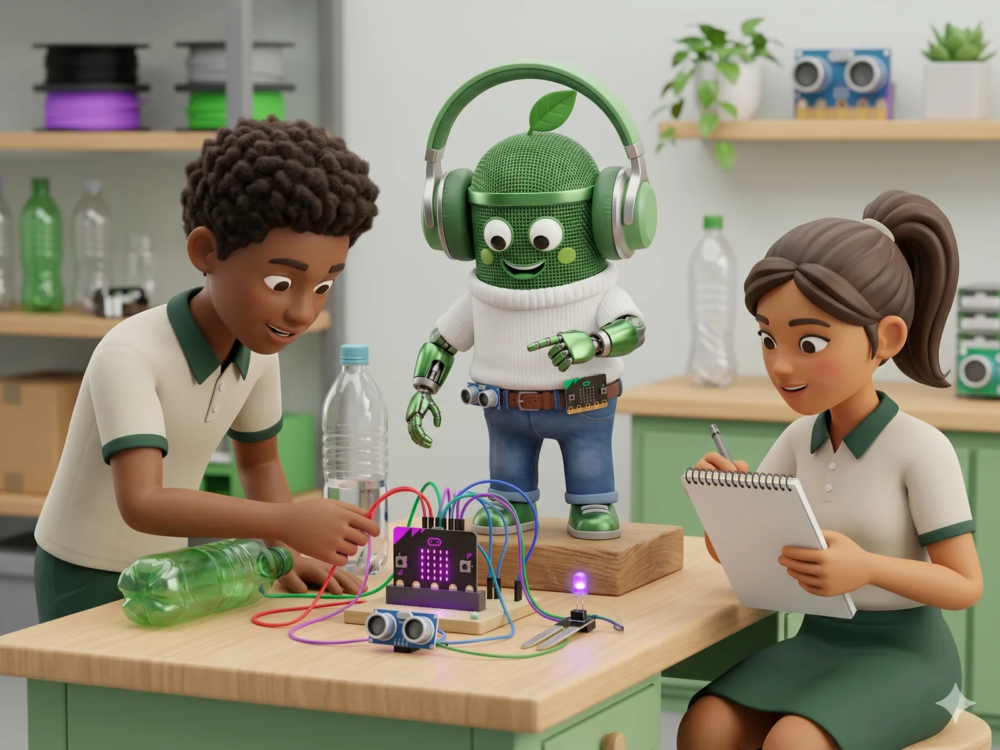
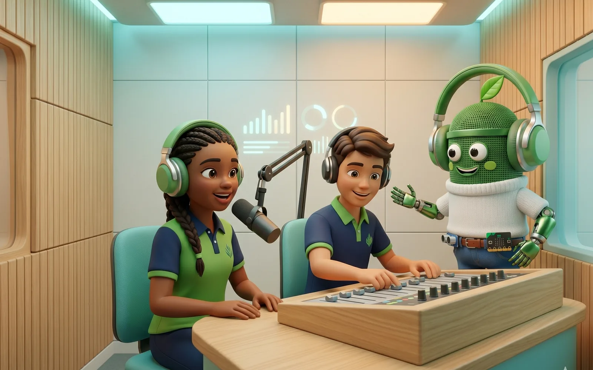
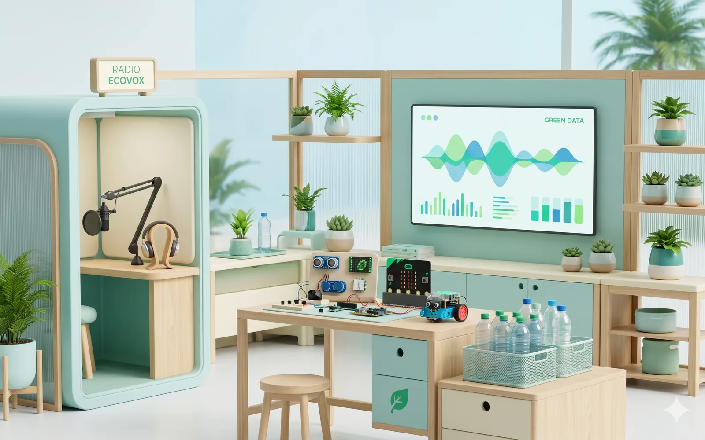
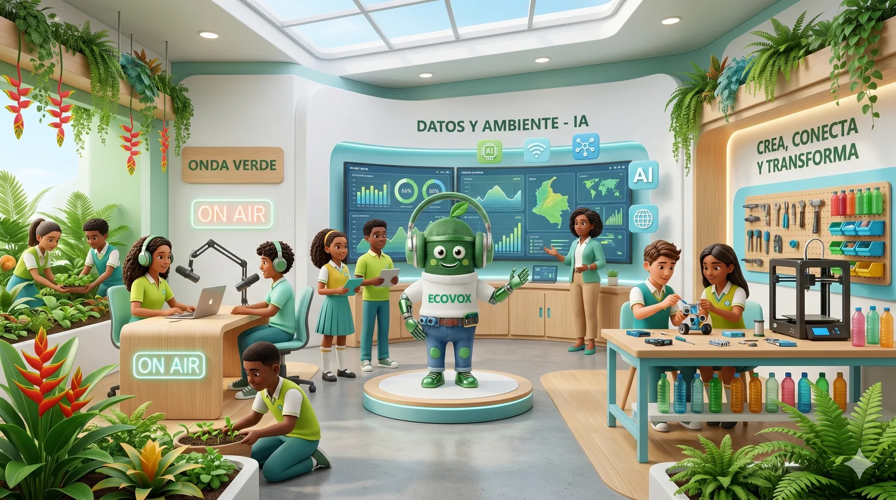
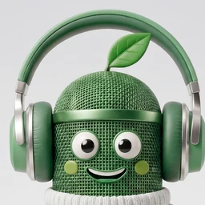
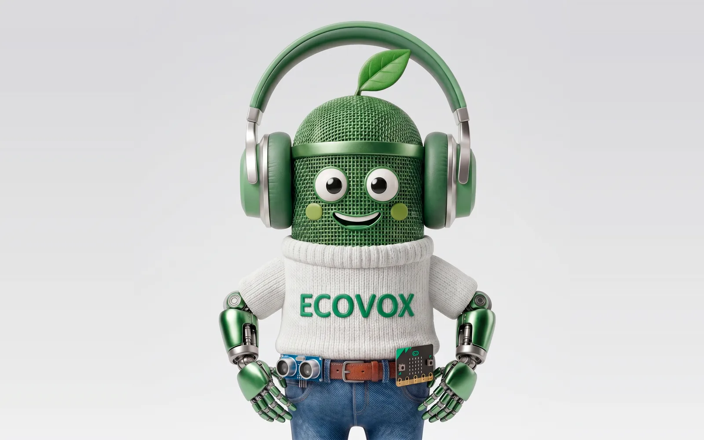

ResiduosODS 11ODS 12

HC-SR04 · ultrasónico
EcoPuntos: El Reto de la Botella
Contenedores inteligentes que miden el nivel de llenado y una campaña de puntos por salón para reducir el plástico.
La emisora del proyecto: 16 emisiones quincenales al año en INSEMA STEREO.
Ver la parrillaLectura crítica, pensamiento crítico, oralidad, producción textual, cultura ambiental y ciudadanía.
Ver el métodoConvertimos la radio escolar en un laboratorio donde la voz se vuelve datos, los datos se vuelven acción y la acción se vuelve cambio.
La radio del proyecto, al aire — y una sala donde la comunidad comenta cada emisión en vivo.

EN VIVOIngresa tu nombre para unirte a la conversación de la comunidad.
Es la meta: reducir los residuos plásticos del patio y la cafetería. Pero el reto se oye todos los días en INSEMA.
Cada reto del PRAE se convierte en un episodio, una campaña y una solución Maker de bajo costo con sensores.

Contenedores inteligentes que miden el nivel de llenado y una campaña de puntos por salón para reducir el plástico.

Grifos con sensor de caudal y electroválvula de corte automático que cuidan cada gota de agua.

Jardín vertical en botellas PET con sensor de humedad de suelo y bomba por relé para reverdecer el patio.
El ciclo de Aprendizaje Basado en Proyectos articula cada emisión y conecta cada paso con su competencia del currículo nacional.
Elegimos un reto ambiental real del colegio y verificamos los datos.
Lectura + pensamiento crítico · ODS 6 y 12Diseñamos la solución Maker con sensores y co-escribimos el guion.
Producción textual · DBA Lenguaje 6-9Grabamos en cabina y lo emitimos en Ondas Verdes.
Oralidad · Estándares de LenguajeLa comunidad actúa y medimos el impacto contra la línea base.
Competencias ciudadanas · PRAE · ODS 4, 11, 13Cada emisión mantiene la misma estructura para que el equipo rote roles sin perder el formato. Lo que cambia es el reto del mes.
Cada estudiante asume un rol con un entregable verificable. La rotación garantiza que todos ejerciten el espectro completo de competencias.
Define el tema, distribuye tareas y coordina los tiempos del equipo.
Entregable: escaleta + actaBusca, verifica y selecciona datos del reto. Distingue fuente confiable de rumor.
Entregable: ficha de datos verificadosConvierte los datos en guion con gancho, desarrollo y llamado a la acción.
Entregable: guion del episodioEnsaya y graba la locución: dicción, ritmo, entonación y pausas.
Entregable: pista de audio grabadaMonta y prueba el cableado del sensor y opera la mezcla de audio en cabina.
Entregable: diagrama de cableado validadoRecoge testimonios y evidencia en el patio y la cafetería.
Entregable: audios de entrevista + bitácoraRedacta la pieza de difusión y documenta el avance de la meta.
Una rúbrica formativa en tiempo real, alineada a competencias del MEN, que evalúa el guion mientras el estudiante escribe.
Determinista y transparente: el mismo guion recibe siempre la misma valoración, y el estudiante entiende cómo mejorar.
Velo en vivo en el laboratorioMetas honestas, no logros: cada una parte de cero y tiene su instrumento de medición.
Menos residuos plásticos en patio y cafetería
Pesaje mensual vs. línea base
Estudiantes en nivel Alto/Superior en la rúbrica
Rúbrica formativa de guion
Emisiones al año de Ondas Verdes
Registro de parrilla quincenal
Nivel de avance en lectura crítica
Pre/post-test a grupo focal
Pesaje inicial de residuos, instalación de los contenedores con HC-SR04 y pre-test de lectura crítica.
★ Hito: línea base registrada (27 feb)Conformación del equipo radial, simulador de cableado y primera corrida del evaluador de guion.
★ Hito: parrilla anual aprobada (27 mar)Rotación de los tres retos con emisiones quincenales sostenidas de Ondas Verdes.
★ Hito: ≥80% de guiones en Alto/Superior (30 sep)Pesaje final vs. línea base, post-test y rendición de cuentas con las cuatro metas medidas.
★ Hito: 16 emisiones completadas (27 nov)Sensores de bajo costo compatibles con Micro:bit y Arduino, al servicio de problemas reales del colegio.
El sensor ultrasónico lee el nivel de llenado; la campaña de EcoPuntos premia a los salones que más reducen.
Ver demoUn sensor de caudal y una electroválvula de corte automático evitan el desperdicio de agua en los grifos.
Ver demoBotellas PET recicladas, un sensor de humedad de suelo y una bomba por relé reverdecen el patio.
Ver demo
Yo no doy sermones: hago preguntas.

La transparencia no debilita el proyecto: lo blinda. Enseñamos a distinguir lo simulado de lo real.
Lo que ocurre en el laboratorio, en la cabina y en el patio de INSEMA — contado por el equipo de redacción de Ondas Verdes.
El equipo radial registró el peso inicial de los residuos del patio y la cafetería. Es el punto cero contra el que mediremos cada quincena la meta de −15%.
Leer la notaSeguimos el cambio en cada plataforma: clíps de la cabina, retos ambientales y la voz de los estudiantes.
ECOVOCES · Donde se escucha el cambio
Transparencia: en el laboratorio, la IA y la voz son simulación didáctica y las cifras son metas del piloto 2026.
Tu voz también cuenta. Súbele.